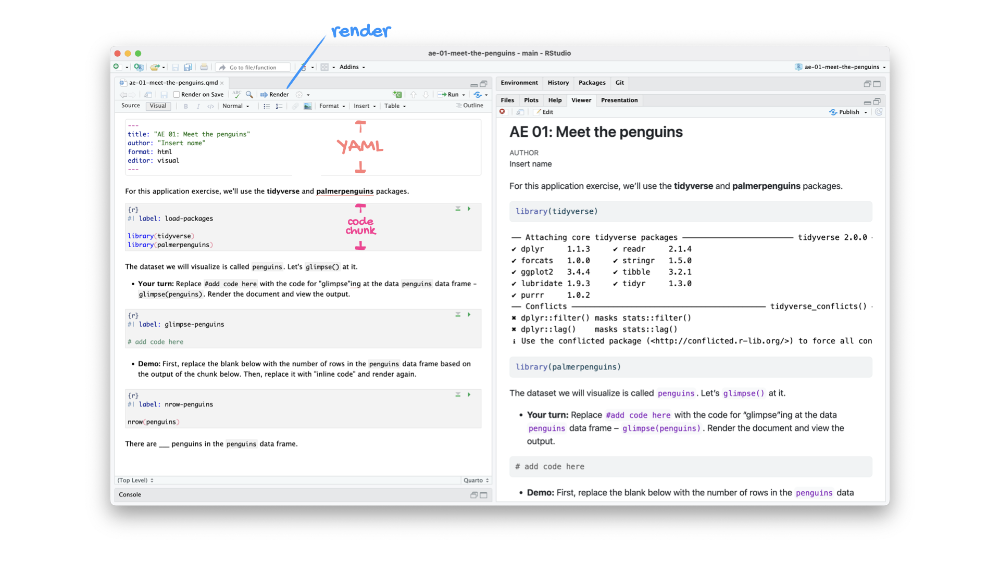

Grammar of Data Visualization
Lecture 2
Warm-up
Announcements
…
Outline
Last time:
We introduced you to the course toolkit.
You cloned your
aerepositories and started making some updates in your Quarto documents.You did not commit and push your changes back.
. . .
Today:
You will commit your changes from last time and push them to wrap up that application exercise.
We will introduce data visualization.
You will pull to get today’s application exercise file.
You will work on the new application exercise on data visualization, commit your changes, and push them.
From last time
ae-01-meet-the-penguins
Go to RStudio, confirm that you’re in the ae project, and open the document ae-01-meet-the-penguins.qmd.
Tour recap: Quarto

Tour recap: Git + GitHub
Once we made changes to our Quarto document, we
went to the Git pane in RStudio
staged our changes by clicking the checkboxes next to the relevant files
committed our changes with an informative commit message
pushed our changes to our application exercise repos
confirmed on GitHub that we could see our changes pushed from RStudio
How will we use Quarto?
- Every application exercise, lab, project, etc. is an Quarto document
- You’ll always have a template Quarto document to start with
- The amount of scaffolding in the template will decrease over the semester
What’s with all the hexes?

We have hexes too!
Grab one before you leave!

Data visualization
Examining data visualization

ae-02-bechdel-dataviz
- Go to your
aeproject in RStudio. - Make sure all of your changes up to this point are committed and pushed, i.e., there’s nothing left in your Git pane.
- Click Pull to get today’s application exercise file.
- Work through the application exercise in class, and render, commit, and push your edits by the end of class.
Recap of AE
- Construct plots with
ggplot(). - Layers of ggplots are separated by
+s. - The formula is (almost) always as follows:
ggplot(DATA, aes(x = X-VAR, y = Y-VAR, ...)) +
geom_XXX()- Aesthetic attributes of a geometries (color, size, transparency, etc.) can be mapped to variables in the data or set by the user, e.g.
color = binaryvs.color = "pink". - Use
facet_wrap()when faceting (creating small multiples) by one variable andfacet_grid()when faceting by two variables.